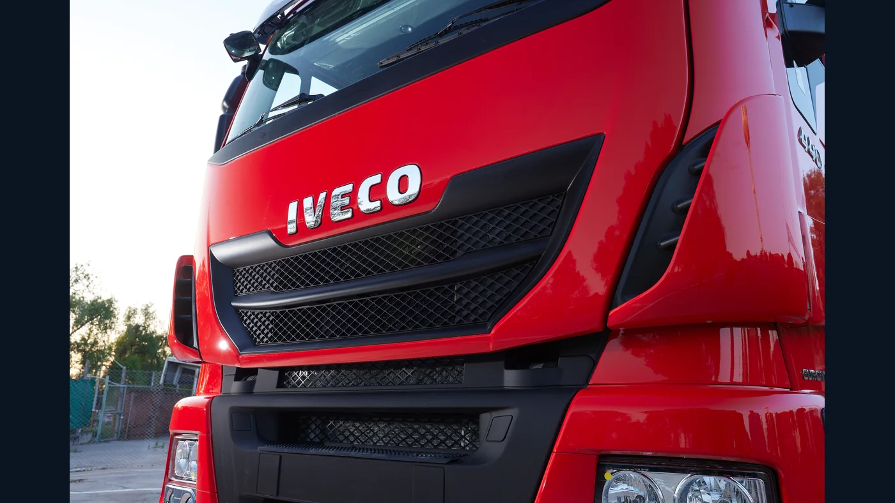
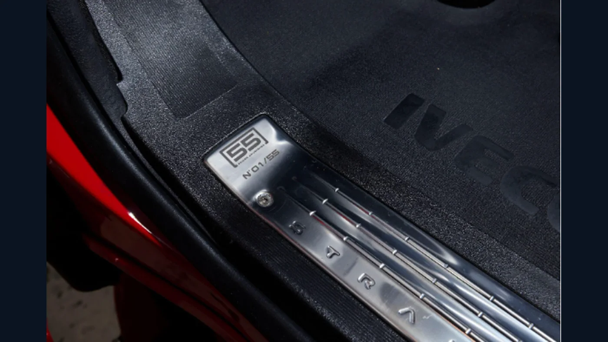

La historia del Iveco Stralis reúne dos recorridos que se cruzan: el desarrollo de una familia internacional de camiones pesados y su transformación en un producto con fabricación e identidad propias en Argentina. Desde su nacimiento en 2002, el nombre acompañó distintas cabinas, motores, transmisiones y formas de pensar el transporte de larga distancia.
No fue un único camión que permaneció sin cambios. Para comprenderlo hay que distinguir mercados y etapas: un Stralis europeo de primera generación, un Hi-Way argentino y un Natural Power a gas comparten una historia comercial, pero no necesariamente los mismos componentes ni la misma configuración.
2002: el nacimiento del Stralis
IVECO sitúa el lanzamiento del Stralis en 2002, dentro de la renovación de su gama pesada de carretera. La retrospectiva publicada por la marca en 2012 recuerda la fabricación en Madrid y el premio Truck of the Year 2003, un reconocimiento que llegó al comienzo de su trayectoria.
La gama amplió su oferta de cabinas con AD, Active Day, y AT, Active Time, mientras que AS, Active Space, identificaba la propuesta más espaciosa. Estas denominaciones permiten entender una idea central del proyecto: ofrecer distintas respuestas dentro de una misma familia, según la tarea y las necesidades de quienes viajaban a bordo.
Mirado en perspectiva, ese comienzo explica por qué hablar de un Stralis sin más datos resulta insuficiente. La diversidad no apareció solamente al final de su vida comercial: formaba parte de la manera en que la gama se organizaba desde sus primeros años.
2004: comienza la historia argentina
La retrospectiva oficial por los 55 años de IVECO en Argentina ubica en 2004 el comienzo de la etapa Stralis, con el lanzamiento del HD. La comunicación de la edición aniversario identifica al Stralis HD como el primer integrante de la familia incorporado a la producción nacional, equipado con motor Cursor 13.
Es un punto decisivo: el Stralis no quedó solamente como un modelo internacional conocido en nuestro mercado. Su recorrido pasó a relacionarse con la planta cordobesa y con una continuidad industrial local. Esa dimensión diferencia la historia argentina de una simple cronología de presentaciones europeas.
También obliga a leer las fechas con cuidado. El año de lanzamiento mundial y el comienzo de una etapa local responden a acontecimientos distintos. Confundirlos borra parte de la historia del modelo y puede llevar a atribuir a una unidad argentina características que pertenecen a otra gama.
2006 y 2007: emisiones, diseño y vida a bordo
En su repaso histórico, IVECO señala la incorporación de tecnología SCR en 2006 y una actualización importante del Stralis en 2007. Esta última modificó el diseño, trabajó sobre la aerodinámica y amplió el espacio interior. Eran cambios europeos que deben ubicarse en su propio calendario.
La evolución muestra que el desarrollo de un camión no se limita a aumentar potencia. Las condiciones de trabajo del conductor, la forma de la cabina y las tecnologías de emisiones también definen una etapa. En una historia de largo plazo, esos cambios son tan relevantes como una cifra destacada en la ficha técnica.
2012: llega el Stralis Hi-Way
El lanzamiento de 2012 dio un nuevo protagonismo a la cabina Hi-Way. La documentación europea distinguía la cabina de 2.500 milímetros de ancho, orientada a larga distancia, de las Hi-Road y Hi-Street de 2.300 milímetros. El interior y el puesto de conducción formaban parte central de la renovación.
La presentación también incorporó IVECONNECT, con funciones de información, navegación y gestión de flotas. La conversación sobre el producto empezaba a integrar con más fuerza el vehículo, el conductor y la empresa que organizaba los viajes.
El resultado tuvo reconocimiento internacional: el Hi-Way obtuvo el Truck of the Year 2013, anunciado en el Salón de Hannover de 2012. Fue un segundo hito de ese premio para la historia del Stralis, diez años después del galardón correspondiente a 2003.

Los motores Cursor: una familia, no una sola mecánica
Los Cursor son una referencia constante en el recorrido del Stralis, pero su nombre no describe una única combinación. El comunicado europeo de 2012 enumeraba motores de seis cilindros en línea: 8, 10 y 13 litros para Euro V, y 9, 11 y 13 litros para Euro VI.
Esa variedad es importante al mirar un camión usado o reconstruir su historia. La denominación comercial de la cabina no identifica por sí sola el motor instalado. Tampoco una potencia parecida garantiza que dos unidades compartan transmisión, sistema de emisiones o repuestos.
Por eso, esta historia sirve para reconocer etapas, no para sustituir una ficha de fábrica. Para conocer una unidad concreta corresponde revisar su documentación, identificación de motor y número de chasis. Es una distinción sencilla, pero evita convertir una descripción general en una afirmación técnica incorrecta.
2016: XP y Natural Power abren caminos diferentes
En junio de 2016, IVECO presentó en Madrid una renovación del Stralis centrada en la cadena cinemática y el costo total de operación. Dentro de esa etapa, el XP representaba la propuesta diésel para larga distancia y el NP, Natural Power, la alternativa a gas natural.
El NP de aquel lanzamiento utilizaba un motor de nueve litros con 400 hp y 1.700 Nm. Era una variante específica dentro de la evolución de la gama, no una característica común a todos los Stralis ni una conversión genérica del diésel.
La importancia histórica de este punto está en la diversificación. Una misma familia comercial comenzó a expresar caminos energéticos distintos. Para contar esa transformación con precisión hay que conservar el contexto del anuncio y evitar suponer que todas esas variantes se ofrecieron simultáneamente en Argentina.
2017: el Stralis NP 460
En octubre de 2017 llegó el NP 460, con motor Cursor 13 NP y transmisión automatizada Hi-Tronix de doce marchas. La oferta contemplaba gas natural comprimido, licuado o combinaciones de depósitos, según configuración.
IVECO anunciaba hasta 1.600 kilómetros para la versión con doble depósito de GNL. Esa cifra debe leerse como una capacidad declarada para una configuración determinada, no como una autonomía garantizada en cualquier trabajo. Lo relevante para la historia es la ampliación de la propuesta a gas dentro del transporte de larga distancia.
2016 a 2018: Euro V y Hi-Way nacional
El calendario argentino siguió su propio desarrollo. La retrospectiva oficial recuerda la incorporación de tecnología Euro V en 2016 y la suma del extrapesado Hi-Way a la producción local en 2018. El segundo acontecimiento consolidó otra etapa de la familia dentro de la actividad industrial de Córdoba.
Hi-Way y Hi-Road convivieron como propuestas diferenciadas: la marca describe al Hi-Road como una opción para transporte regional y de media distancia. No conviene reducir esas denominaciones a un orden de mejor o peor; interesa comprender a qué tipo de uso respondía cada configuración.
2022 y 2024: continuidad y una edición especial
IVECO destacó en 2022 la incorporación de suspensión neumática de producción nacional a sus pesados. Dos años después, eligió al Stralis para celebrar sus 55 años en Argentina con una serie de 55 unidades numeradas, presentada el 18 de octubre de 2024.
El rojo Módena vinculaba esa edición con el color del primer Stralis fabricado en el país. La comunicación identificaba al Hi-Way 600S44T con suspensión neumática como parte de esa evolución. Más allá del acabado especial, la serie funcionaba como un reconocimiento a la permanencia de la familia en la historia local.

El relevo del S-Way no ocurrió a la vez en todos los países
El 2 de julio de 2019, IVECO presentó el S-Way en Madrid como una nueva etapa de sus pesados de carretera, con una cabina rediseñada y mayor énfasis en conectividad y servicios. Ese lanzamiento ayuda a entender el relevo internacional, pero no fija automáticamente el final del Stralis en todos los mercados.
La continuidad argentina del Hi-Way y la edición de 2024 muestran por qué no debe trasladarse una cronología europea sin revisar el contexto. El comunicado oficial del 2 de marzo de 2026 confirmó, por su parte, la producción del S-Way Euro VI en Córdoba: otro hito propio del recorrido industrial nacional.
El legado del Stralis
El Stralis permite recorrer más de dos décadas de cambios en el camión pesado: cabinas orientadas al conductor, evolución de motores, alternativas a gas y servicios conectados. Para Argentina agrega algo propio: una trayectoria de fabricación local que le dio continuidad más allá de las fechas de renovación internacional.
Su historia no cabe en una sola potencia ni en una única fotografía. Está en la relación entre sus distintas versiones y las etapas que representan. Conocer ese recorrido ayuda a mirar cada unidad con mejores preguntas y a valorar un nombre que forma parte de la memoria del transporte argentino.